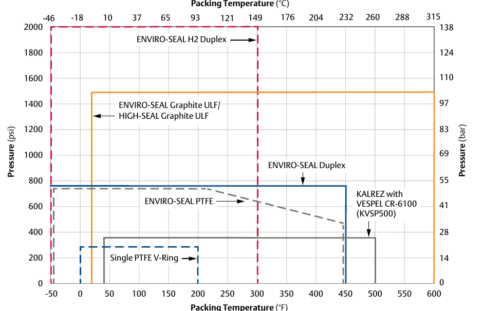
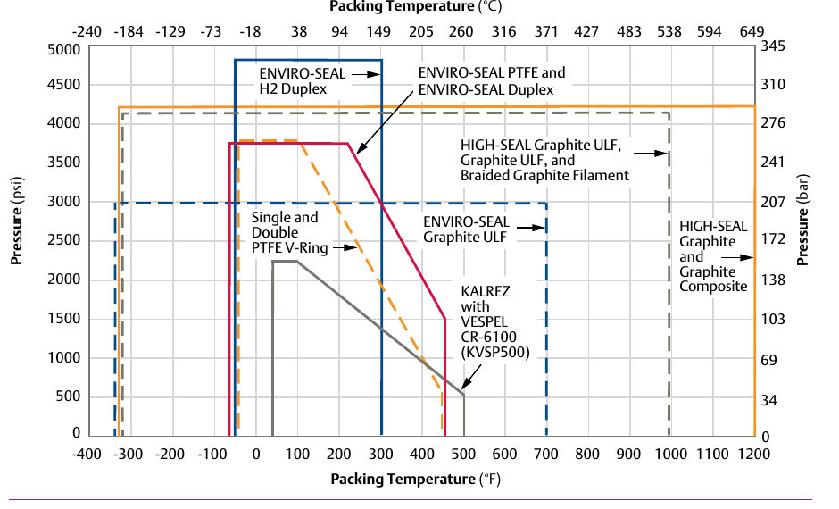

100 PPM vs. Non-Environmental Service
100 PPM Service (Fig. 5.17)

Pressure/temperature envelope per packing system under the 100 PPM fugitive-emissions standard — narrower envelopes throughout.
Non-Environmental Service (Fig. 5.18)

Same packing-system set under non-environmental service — envelopes open up substantially (e.g. the temperature axis extends to roughly 1200°F versus roughly 600°F at 100 PPM).
After Control Valve Handbook, 6th ed., Figs. 5.17 & 5.18 (printed p. 136) — used directly. Component Index: cvh-cmp-packing-guidelines-chart-100ppm, cvh-cmp-packing-guidelines-chart-non-environmental.